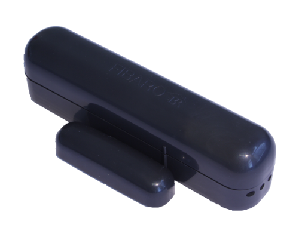
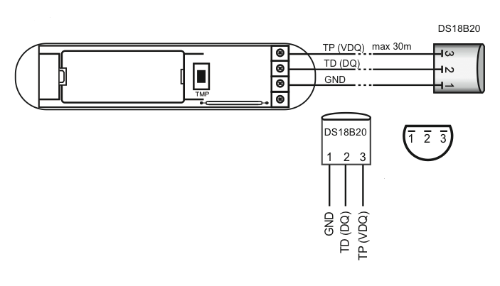
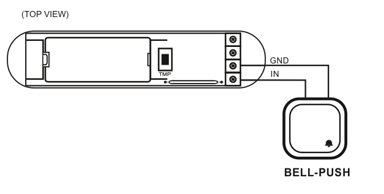

FIB_FGK-103
Firmware Version : 1.3 |
 |
colour: black
Quick Start
S This device is a wireless Z-Wave sensor. For Inclusion and Exclusion, sending out a NIF or wakeup the device push down the tamper switch (push the device on a table) if the device is not yet mounted. Then hit the little button (B) inside of the enclosure one time.
Please refer to the chapters below for detailed information about all aspects of the products usage.
What is Z-Wave?
This device is equipped with wireless communication complying to the Z-Wave standard. Z-Wave is the international standard for wireless communication in smart homes and buildings. It is using the frequency of 868.42 MHz to realize a very stable and secure communication. Each message is reconfirmed (two-way communication) and every mains powered node can act as a repeater for other nodes (meshed network) in case the receiver is not in direct wireless range of the transmitter.
Z-Wave differentiates between Controllers and Slaves. Slaves are either sensors (S) transmitting metered or measured data or actuators (A) capable to execute an action. Controllers are either static mains powered controllers (C) also referred to as gateways or mobile battery operated remote controls (R). This results in a number of possible communication patterns within a Z-Wave network that are partly or completely supported by a specific device.

- Controllers control actuators
- Actuators report change of status back to controller
- Sensors report change of status of measured values to controller
- Sensors directly control actuators
- Actuators control other actuators
- Remote controls send signals to static controllers to trigger scenes or other actions
- Remote controls control other actuators.
There are two different role a controller can have. There is always one single primary controller that is managing the network and including/excluding devices. The controller may have other functions - like control buttons - as well. All other controllers don't manage the network itself but can control other devices. They are called secondary controllers. The image also shows that its not possible to operate a sensor just from a remote control. Sensors only communicate with static controllers.
Product description
The Fibaro Door / Window Sensor is a battery powered, Z-Wave compatible reed sensor. It combines the functionality of 3 devices (reed, binary and temperature sensor) in one easy to use product. The sensor can be used for monitoring whether a door, window, window blind or a garage gate is open or closed. In addition, you can integrate any binary output sensor with the Z-Wave network using this sensor, e.g. motion sensors, flood sensors, alarm system sensors, etc.
The product consists of two elements. One of the parts is mounted on the moving part of the window or of the door. The other part is placed on the frame. The device needs to be included into a Z-Wave network by a remote control or any other Z-Wave controller. If an action is detected, the sensor sends a signal to the Z-Wave network main controller.
Batteries
The unit is operated by batteries. Use only batteries of correct type. Never mix old and new batteries in the same device. Used batteries contain hazardous substances and should not be disposed of with household waste!
Battery Type: 1 * CR2
Installation Guidelines
The sensor consists of two parts: The sensor main device plus a little magent that is triggering the sensor when closed to the main device. One part of the sensor is mounted on the fixed part of the door or window while the other part is mounted on the moving part in a way, that both devices are adjacent to each other with no more than 5 mm distance between them. The main device can be mounted with double sided tape however for security applications it is strongly recommended to use screws. The holes to screw the device are placed behind the battery. Hence the battery need to be removed for this procedure. The image shows the two buttons 'TMP' and 'B', the reed sensor and the contact terminal for external switches and sensors.
The external temperature sensor DS18B20 is connected to the device as shown in this picture. In case the sensor shall only act as temperature sensor it can be placed everywhere and there is no need to place the magnet nearby. Beside to act as temperature sensor the device can also work as simple digial sensor transmitting the status of an externally connected on/off switch. The subsequent image shows how to connect such an external switch to the pins 'IN' and 'GND'.
Behavior within the Z-Wave network
I On factory default the device does not belong to any Z-Wave network. The device needs to join an existing wireless network to communicate with the devices of this network. This process is called Inclusion. Devices can also leave a network. This process is called Exclusion. Both processes are initiated by the primary controller of the Z-Wave network. This controller will be turned into exclusion respective inclusion mode. Please refer to your primary controllers manual on how to turn your controller into inclusion or exclusion mode. Only if the primary controller is in inclusion or exclusion mode, this device can join or leave the network. Leaving the network - i.e. being excluded - sets the device back to factory default.
If the device already belongs to a network, follow the exclusion process before including it in your network. Otherwise inclusion of this device will fail. If the controller being included was a primary controller, it has to be reset first.
For Inclusion and Exclusion push down the tamper switch (push the device on a table) if the device is not yet mounted. Then hit the little button (B) inside of the enclosure one time.
Operating the device
The sensor reports status changes and - if a external temperature sensor is attached - the temperature using wireless Z-Wave commands. There is no further local interaction needed or possible.
Wakeup Intervals - how to communicate with the device?
W This device is battery operated and turned into deep sleep state most of the time to save battery life time. Communication with the device is limited. In order to communicate with the device, a static controller C is needed in the network. This controller will maintain a mailbox for the battery operated devices and store commands that can not be received during deep sleep state. Without such a controller, communication may become impossible and/or the battery life time is significantly decreased.
This device will wakeup regularly and announce the wakeup state by sending out a so called Wakeup Notification. The controller can then empty the mailbox. Therefore, the device needs to be configured with the desired wakeup interval and the node ID of the controller. If the device was included by a static controller this controller will usually perform all necessary configurations. The wakeup interval is a tradeoff between maximal battery life time and the desired responses of the device.
To wake up the device push down the tamper switch (push the device on a table) if the device is not yet mounted. Then hit the little button (B) inside of the enclosure one time.
It is possible to set the node ID to 255 to send wakeup notifications as broadcast. In this mode device takes more time to go to sleep and drains battery faster, but can notify all it's direct neighbors about a wakeup.
Node Information Frame
NI The Node Information Frame is the business card of a Z-Wave device. It contains information about the device type and the technical capabilities. The inclusion and exclusion of the device is confirmed by sending out a Node Information Frame. Beside this it may be needed for certain network operations to send out a Node Information Frame.
For sending out a node information frame push down the tamper switch (push the device on a table) if the device is not yet mounted. Then hit the little button (B) inside of the enclosure one time.
Associations
A Z-Wave devices control other Z-Wave devices. The relationship between one device controlling another device is called association. In order to control a different device, the controlling device needs to maintain a list of devices that will receive controlling commands. These lists are called association groups and they are always related to certain events (e.g. button pressed, sensor triggers, ...). In case the event happens all devices stored in the respective association group will receive a common wireless command.
Association Groups:
| 1 | Devices controlled by open/close events (max. nodes in group: 5) |
Command Classes
Supported Command Classes- Basic (version 1)
- Battery (version 1)
- Wake Up (version 1)
- Association (version 1)
- Version (version 1)
- Binary Sensor (version 1)
- Alarm (version 1)
- Manufacturer Specific (version 1)
- Basic (version 1)
- Alarm (version 1)
Technical Data
| Battery Type | 1 * CR2 |
| Explorer Frame Support | No |
| SDK | 5.02 pl2 |
| Device Type | Slave with routing capabilities |
| Generic Device Class | Binary Sensor |
| Specific Device Class | Routing Binary Sensor |
| Routing | No |
| FLiRS | No |
| Firmware Version | 1.3 |
Explanation of Z-Wave specific terms
- Controller — is a Z-Wave device with capabilities to manage the network. Controllers are typically Gateways, Remote Controls or battery operated wall controllers.
- Slave — is a Z-Wave device without capabilities to manage the network. Slaves can be sensors, actuators and even remote controls.
- Primary Controller — is the central organizer of the network. It must be a controller. There can be only one primary controller in a Z-Wave network.
- Inclusion — is the process of bringing new Z-Wave devices into a network.
- Exclusion — is the process of removing Z-Wave devices from the network.
- Association — is a control relationship between a controlling device and a controlled device.
- Wakeup Notification — is a special wireless message issued by a Z-Wave device to annonces that is is able to communicate.
- Node Information Frame — is a special wireless message issued by a Z_Wave device to announce its capabilities and functions.
Disposal Guidelines
The product contains batteries. Please remove the batteries when the device is not used.
Do not dispose of electrical appliances as unsorted municipal waste, use separate collection facilities. Contact your local government for information regarding the collection systems available. If electrical appliances are disposed of in landfills or dumps, hazardous substances can leak into the groundwater and get into the food chain, damaging your health and well-being.